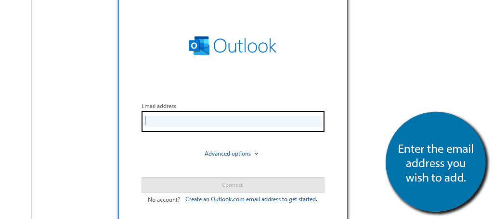

name:Prak SreyRath
1.ការណែនាំអំពីការកំណត់អ៊ីមែលលើកម្មវិធីផ្សេងៗ
A. Google Gmail “Send As”
- ចូលទៅក្នុងគណនី Gmail។
- ចុច "Settings" → “See all settings” → “Accounts and Import”។
- ចុច “Add another email address”។
- បញ្ចូលឈ្មោះអ្នក និងអាសយដ្ឋាន៖ demo@your-name.com
- បញ្ចូល SMTP Server:
- SMTP Server: smtp.yourdomain.com
- Username: demo@your-name.com
- Password: (ពាក្យសម្ងាត់អ៊ីមែល)
- Port: 587 | Security: TLS
- បញ្ចូលកូដ Verify →
B. Microsoft Outlook
- បើកកម្មវិធី Microsoft Outlook។
- ចុច "File" → "Add Account"។
- បញ្ចូលអាសយដ្ឋានអ៊ីមែល៖ demo@your-name.com

- បញ្ចូលពាក្យសម្ងាត់ →
- Manual config:
- Advanced options → “Let me set up my account manually”
- ជ្រើស IMAP → បញ្ចូល server, port, និង authentication
C. Mozilla Thunderbird
- ចូលទៅកាន់ Mozilla Thunderbird ដែលបានដំឡើងរួច។

- បង្អួច "Set Up Your Existing Email Address" នឹងបង្ហាញឡើង...
- បញ្ចូលព័ត៌មានខាងក្រោម៖
- ឈ្មោះពេញ (Full Name): ឈ្មោះអ្នក
- អាសយដ្ឋានអ៊ីមែល៖ demo@your-name.com
- ពាក្យសម្ងាត់ (Password): ពាក្យសម្ងាត់របស់គណនី
- ចុច “Continue” →
- បើ Manual config:
- Incoming: IMAP - imap.yourdomain.com - Port 993 - SSL/TLS
- Outgoing: SMTP - smtp.yourdomain.com - Port 587 - STARTTLS
- Authentication: Normal password
- ចុច “Re-test” → បន្ទាប់មក “Done”។